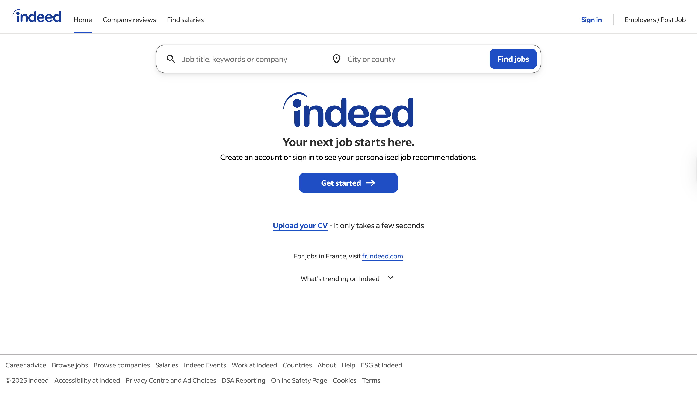

Indeed Redesign
UX Evaluation + Accessible Redesign
Accessible redesign preview
UX evaluation and accessible redesign of a job search platform.
- HTML
- JavaScript
- Accessibility
Accessible Redesign
Visit Website →- Improvements: structured homepage, job comparison, assessment quizzes, accessibility fixes, required inputs and feedback, country selector with international search, FAQ, and a structured footer.
Original Indeed.com
Visit Site →

Screenshot of the original Indeed homepage
- Issues identified: The platform faces several usability and accessibility issues, including missing alt text, unexpected redirects, redundant links, limited error prevention and feedback, and an unstructured homepage.